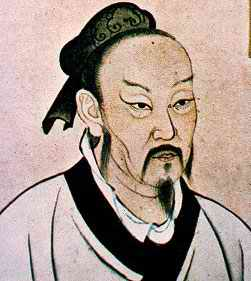

92 MENG-TSE (MENCIUS) ± 371 SM - ± 289
SM
Filosof Cina Meng-Tse
(Mencius) adalah pengganti Kong Hu-Cu. Ajaran-ajarannya,
seperti apa yang dibentangkan dalam buku Book of Mencius,
sangat dihargai di Tiongkok selama berabad-abad. Dia sering
dijuluki "The Second Sage," manusia bijak kedua, yaitu
kebijakannya jatuh nomor dua sesudah Kong Hu-Cu yang
berjangka selisih dengannya sekitar 2000 tahun.
Meng-Tse dilahirkan sekitar tahun 371 SM di negeri kecil
Tsou, yang kini berada di provinsi Shantung. Masa ia
dilahirkan, babak akhir dinasti Chou, disebut oleh orang
Cina dengan julukan "Masa perang antar negeri," berhubung
Cina secara politis waktu itu terpecah belah. Meng-Tse,
meskipun dia berada di belakang tradisi Kong Hu-Cu dan
senantiasa jadi pendukung gigih teori-teori dan gagasan Kong
Hu-Cu, akhimya dihormati selaku cerdik pandai dan filosof
atas daya kreasi dan karya pikirnya sendiri.
Meng-tse menghabiskan banyak masa dewasanya melakukan
perjalanan di seputar dalam negeri Cina dan menawarkan
nasihatnya kepada pelbagai penguasa. Beberapa penguasa
mendengarkan dengan penuh hormat kepadanya, dan untuk
beberapa saat dia menjadi pejabat pemerintah Ch'i; tetapi
secara pukul rata dia tidak punya posisi permanen ataupun
pembuat keputusan. Di tahun 312 SM, saat umurnya sekitar
lima puluh sembilan tahun, dia kembali ke kampungnya di
negeri Tsou dan tinggal menetap di situ sampai mati. Kapan
dia mati tidak jelas, mungkin sekitar tahun 289 SM.
Meng-tse mengumpulkan pengikut-pengikut selama masa
hidupnya, tetapi pengaruhnya atas Cina sebagian terpokok
karena Book of Menciusnya, di mana tertera ajaran-ajarannya.
Meskipun buku itu bisa jadi sudah mengalami pelbagai
perbaikan oleh pengikut-pengikutnya, kecil sekali keraguan
bahwa pokok-pokoknya mencerminkan ide-ide Meng-tse
sendiri.
Citra Book of Mencius berwarna idealistis dan optimis,
memantulkan keyakinan teguh Meng-tse bahwa sifat manusia itu
pada dasarnya baik: dalam banyak hal, ide politiknya serupa
dengan Kong Hu-Cu; khususnya, Meng-tse percaya benar bahwa
seorang raja harus memerintah pertama-tama lewat contoh
moral daripada dengan kekuatan. Tetapi, Meng-tse lebih
mendekati "orang milik umum" daripada Kong Hu-Cu. "Langit
melihat seperti rakyat melihat, langit mendengar seperti
rakyat mendengar," adalah salah satu pernyataannya yang
terbaik.
Meng-tse menekankan bahwa komponen paling penting dari
tiap negara adalah rakyat, dan bukannya penguasa. Adalah
kewajiban penguasa memajukan kesejahteraan rakyat; khususnya
dia harus memberikan rakyat itu penuntun moral dan dengan
kondisi yang layak untuk hidupnya. Diantara politik
pemerintahan dia menganjurkan: perdagangan bebas; pajak
ringan; pelestarian sumber alam; pemerataan kekayaan yang
sama daripada keadaan sekarang; dan persediaan pemerintah
buat kesejahteraan orang-orang tua jompo dan orang miskin.
Meng-tse percaya bahwa kekuasaan seorang Raja berasal dari
langit; tetapi seorang Raja yang mengabaikan kesejahteraan
rakyat akan kehilangan "mandat dari langit," dan akan
sepantasnya ditumbangkan. Berhubung bagian terakhir dari
kalimat itu mengikis bagian pertama, Meng-tse pada dasarnya
menekankan (jauh sebelum John Locke), bahwa rakyat punya hak
memberontak melawan penguasa yang tidak adil. Ini merupakan
ide yang diterima secara luas di Cina.
Kini bicara secara umum, sepanjang hampir sepanjang
sejarah, jenis politik yang dianjurkan Meng-tse lebih
populer di kalangan rakyat ketimbang di kalangan penguasa.
Karena itu janganlah heran bilamana usul Meng-tse tidak
diterima oleh penguasa-penguasa Cina pada masanya. Tetapi
dalam perjalanan sang waktu, pandangan-pandangannya menjadi
semakin populer di kalangan sarjana-sarjana Kong Hu-Cu dan
di kalangan rakyat Cina. Reputasi Meng-tse, yang sudah
tinggi, bahkan menjadi lebih besar di Cina disertai dengan
bangkitnya neo-Confucianisme di abad ke-11 dan ke-12.
Di Barat, tentu saja, Meng-tse tak punya pengaruh yang
berarti. Ini disebabkan sebagian dari kenyataan bahwa dia
menulis dalam bahasa Cina. Tao Te Ching oleh Lao Tze yang
ditulis dalam bahasa Cina yang boleh dibilang bersamaan
waktunya dengan Book of Mencius, telah diterjemahkan ke
dalam pelbagai bahasa Eropa berulang kali hanya karena
banyak orang menemukan ide yang dipaparkan di buku itu
memancing rasa ingin tahu. Tetapi relatif sedikit orang
Barat telah menemukan Book of Mencius, khusus yang orisinal-
atau yang terpotong.
Mungkin kedengarannya menarik buat pemerintahan
melibatkan dirinya dalam hal kesejahteraan orang-orang jompo
dan miskin dan cacad; juga kedengarannya menarik untuk
peroleh keringanan pajak. Tetapi, seorang politikus Amerika
yang mengumumkan bahwa dia mendukung kedua politik itu tanpa
penjelasan yang lebih spesifik tampaknya tidak akan peroleh
dukungan kepercayaan baik oleh pihak liberal maupun
konservatif. Sama halnya, Meng-tse menunjukkan di satu pihak
dia berpihak pada pemerataan kekayaan dan di lain pihak
menunjukkan persetujuannya terhadap perdagangan bebas dan
pajak rendah tanpa sampai pada pemecahan masalah seberapa
jauh kemungkinan berjalannya pertentangan diantara kedua
politik itu. Ini mungkin kedengarannya sedikit tidak jujur
bagi Meng-tse yang bagaimanapun tidak menjadi calon untuk
parlemen. Ini boleh dikemukakan oleh seorang filosof yang
menyuguhkan serentetan usul kebajikan (meskipun sebagiannya
tidak konsisten) secara umum, bahkan jika dia tidak secara
khusus menunjukkan bagaimana pertentangan antara kedua
prinsip itu dipecahkan. Bagaimanapun, dalam jangka panjang,
seorang filosof seperti Machiavelli, yang mengutarakan
pilihan jelas ketimbang Meng-tse punya pengaruh lebih besar
di pikiran manusia.
Tetapi, tulisan-tulisan Meng-tse telah betul-betul
mempengaruhi orang Cina. Meskipun arti pentingnya terhadap
Confucianisme tidaklah mendekati kebesaran seperti St. Paul
terhadap Kekristenan (dalam satu hal Meng-tse kekurangan
kesanggupan membujuk yang sungguh luar biasa yang ada pada
St. Paul untuk menarik orang menganut pahamnya), dia tak
diragukan lagi seorang penulis yang punya pengaruh mendalam.
Selama kasarnya dua puluh dua abad, ide-idenya dipelajari di
seluruh daerah yang berpenduduk lebih dari 20% jumlah
penduduk dunia. Hanya sedikit filosof di mana pun punya
pengaruh yang begitu besamya.
|